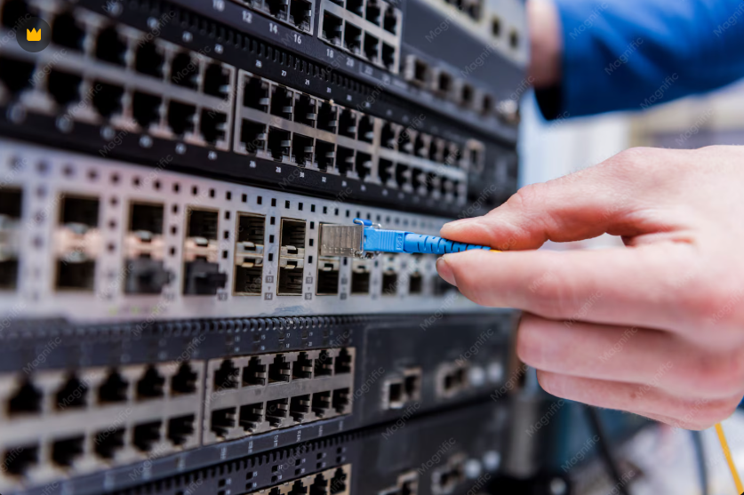

Cisco Catalyst Switch 2911

What can you do with this device?
- MAC Address Table: Unlike a hub that blindly floods data to all ports, a switch intelligently reads incoming frames, builds a table of MAC Addresses, and forwards data only to the specific port of the destination device.
- VLAN Segmentation (Virtual LANs): Switches allow you to logically split one physical network into multiple isolated virtual networks (e.g., separating the HR Department from the Finance Department) for optimized security and reduced broadcast traffic congestion.
- Trunking (802.1Q): Allows multiple VLAN data streams to pass securely through a single physical cable between two connected switches.
Switches operate primarily at Layer 2 (Data Link Layer) of the OSI model. They are used to connect devices (computers, printers, servers) within the same local area network (LAN).
Terminal Running Configuration
Live terminal structure for the node:
Terminal - Cisco Catalyst Switch 2911
Switch> enable
Switch# configure terminal
Switch(config)# hostname Switch2911
! -- VLAN CREATION --
Switch(config)# vlan 10
Switch(config-vlan)# name Management
Switch(config-vlan)# exit
! -- INTERFACE ACCESS AND TRUNK SETTINGS --
Switch(config)# interface fa0/1
Switch(config-if)# switchport mode access
Switch(config-if)# switchport access vlan 10
Switch(config-if)# exit
Switch(config)# interface fa0/24
Switch(config-if)# switchport mode trunk
! -- ENABLING SECURE SSH ACCESS --
Switch(config)# ip domain-name ciscohub.local
Switch(config)# crypto key generate rsa (2048)
Switch(config)# username admin privilege 15 secret AdminPass123
Switch(config)# line vty 0 4
Switch(config-line)# transport input ssh
Switch(config-line)# login local